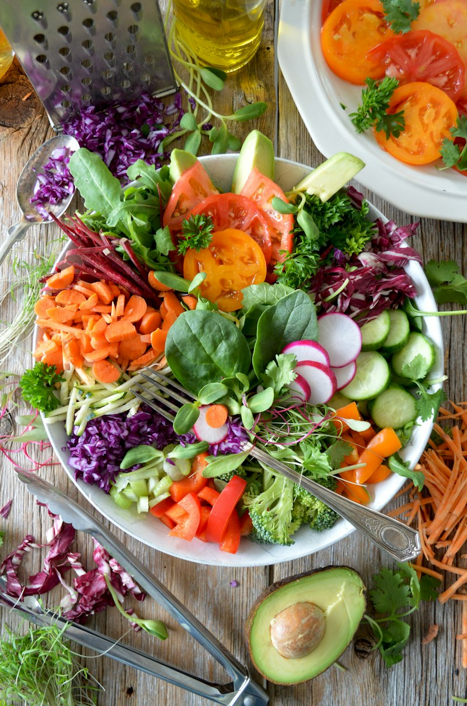
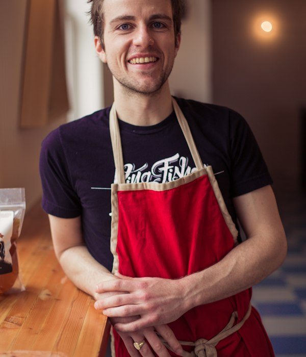
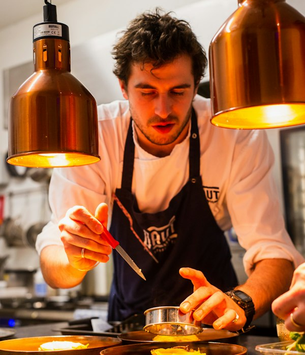

Rooted in Clean Soil, Crafted for Pure Vitality
Founded in 2021 at 124 Harvest Green Way, Bowl'd was born from a radical conviction: nourishing food should never feel like a chore, and quick dining should never compromise on ingredient purity. We bridge regional organic family farms directly to your busy workday routine.
4-Hour Sunrise Harvest Chain
Contracted with 12 vetted zero-pesticide family growers within 40 miles. Hand-picked at dawn, cold-crated, and prepped in our kitchen before lunch.
Zero Industrial Seed Oils Ever
Every warm grain sauté and scratch dressing uses 100% cold-pressed extra virgin olive oil or avocado oil. No canola, soy, preservatives, or synthetic gums.
Functional Macronutrient Calibration
Co-designed by clinical sports nutritionists to balance low-glycemic ancient grains with bioavailable lean proteins for lasting mental stamina.

Our 5-Year Journey
How a humble weekend farmers market pop-up grew into the city's favorite clean-eating ritual.
The Farmers Market Pop-Up
Started with a modest wooden booth at the Downtown Saturday Green Market, serving just two signature grain bowls and stone-ground lemon herb vinaigrette in glass mason jars.
The Cold-Chain Harvest Network
Established direct sourcing cooperatives with 12 organic family farms within a 40-mile radius, guaranteeing sunrise harvest-to-counter transit in under 4 hours.
Kitchen Studio #14 & Compostable Lab
Opened our permanent modernized kitchen at 124 Harvest Green Way, eliminating 100% of single-use petroleum plastics and introducing compostable sugarcane fiber containers.
650,000+ Clean Bowls Delivered
Proudly nourishing mindful commuters, fitness athletes, and health-conscious families with 30+ farm-fresh ingredients and flexible weekly meal subscriptions.
Meet Our Co-Founders
The master culinary artist and clinical nutritionist whose passion, standards, and care shape every bowl we craft.

Chef Maya Lin
14 Years Botanical Culinary MasteryTrained in Michelin-starred farm-to-table kitchens across Northern California and Tokyo, Chef Maya orchestrates ingredient flavor pairings, seasonal microgreens, and scratch cold-pressed vinaigrettes. She believes wholesome nutrition must be as vibrant, craveable, and artful as fine dining.

Chef Julian Diaz, MS
12 Years Functional Micronutrient ScienceHolding a Master's in Nutritional Biochemistry from Cornell, Julian designs macro-balanced meal systems optimized for sustained cognitive clarity, digestive ease, and steady glucose curves. He ensures every bowl delivers clean plant and lean poultry proteins without synthetic additives.
Our Speciality & Kitchen Values
What makes every bowl at Bowl'd distinctly cleaner, fresher, and more nourishing than conventional restaurant takeout.
100% Organic Soil Produce
Harvested at peak soil ripeness and cold-rinsed within hours. Zero synthetic pesticides, chemical waxes, or genetically modified seeds.
Zero Seed Oils Ever
Every dressing, warm saute, and roasted topping uses 100% pure cold-pressed extra virgin olive oil or avocado oil. No canola, soy, or palm oils.
Absolute Diet & Allergen Purity
Dedicated plant-only prep stations, separate cold storage, distinct color-coded utensils, and isolated cutting boards for uncompromising dietary peace of mind.
Daily Scratch Dressing Lab
Our signature dressings—from zesty lemon-herb to creamy golden tahini—are blended fresh every dawn. Zero bottled vinegar preservatives or emulsifier gums.
Triple-Stage UV Filtration
All produce cold-washing, ancient grain steaming, and house dressing preparation utilizes certified multi-stage UV and carbon block micro-filtered water.
Eco Compostable Packaging
Tree-free unbleached sugarcane fiber bowls and plant-resin lids that naturally breathe and return completely to soil within 90 days.
Loved by Everyday Health Seekers & Athletes
Hear what regular subscribers and daily visitors say about our crisp bowls and scratch dressings.
"Bowl'd completely transformed my workday lunches. Before Bowl'd, I was getting sluggish takeout or skipping lunch. Now I have crisp, chef-grade bowls delivered twice a week that keep my energy steady through late afternoon meetings."
Sarah Jenkins
Product Manager • 5-Day Balanced Plan"As a marathon runner, finding ready-to-eat meals that have genuine whole food macros without sketchy fillers is nearly impossible. The Green Goddess and Harissa Chicken bowls are absolute perfection."
"The compostable sugarcane packaging and the dressing on the side means everything stays crisp until I'm ready to eat. Plus, the scratch lemon-herb vinaigrette is addictive. Highly recommend to everyone!"